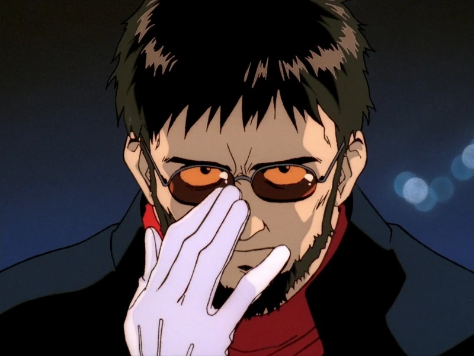
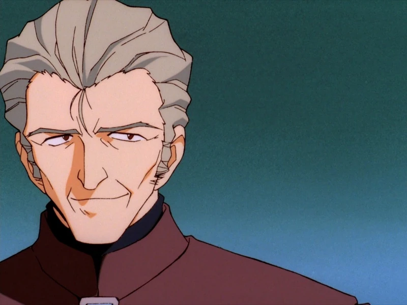
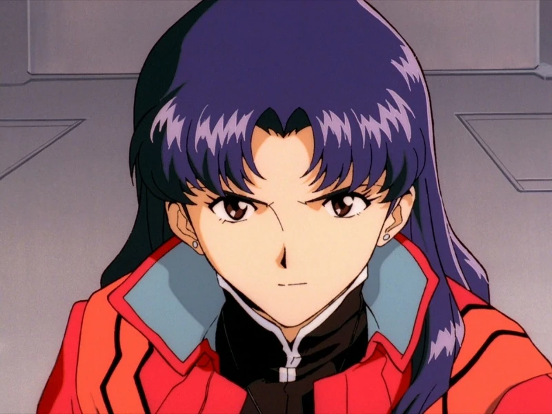
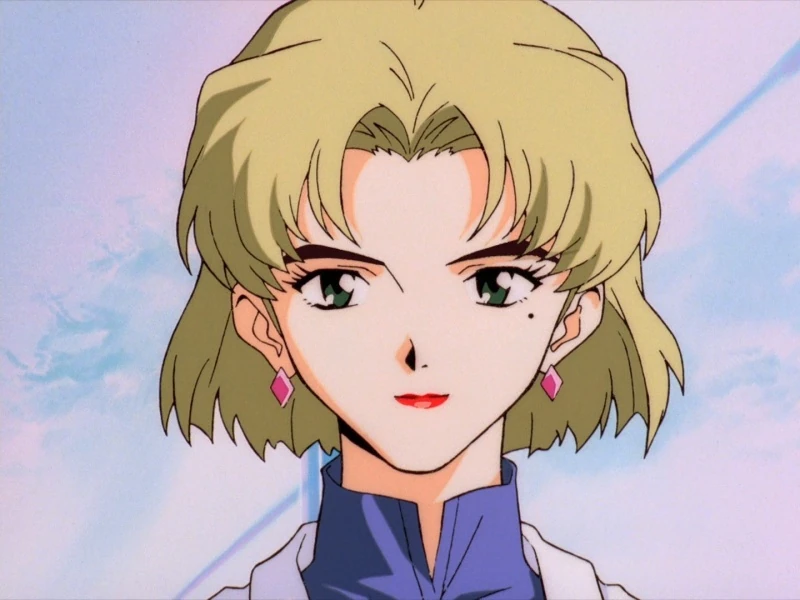
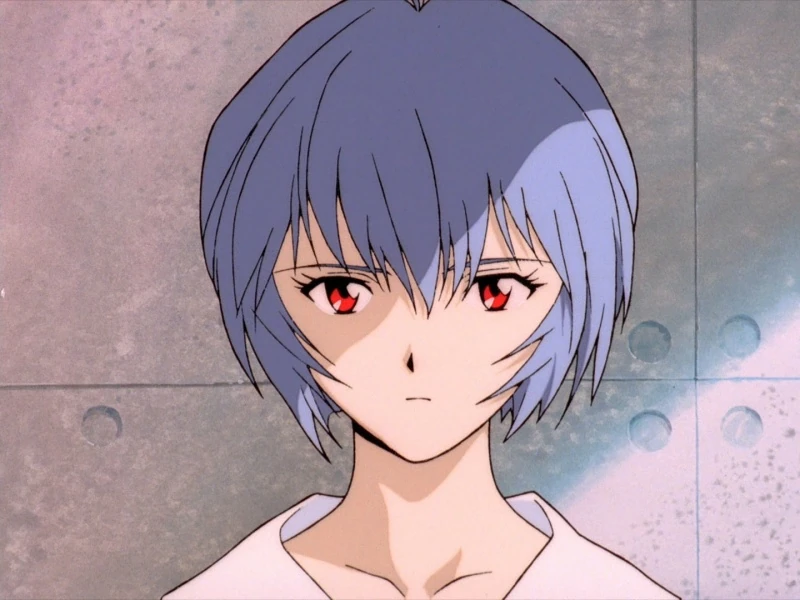
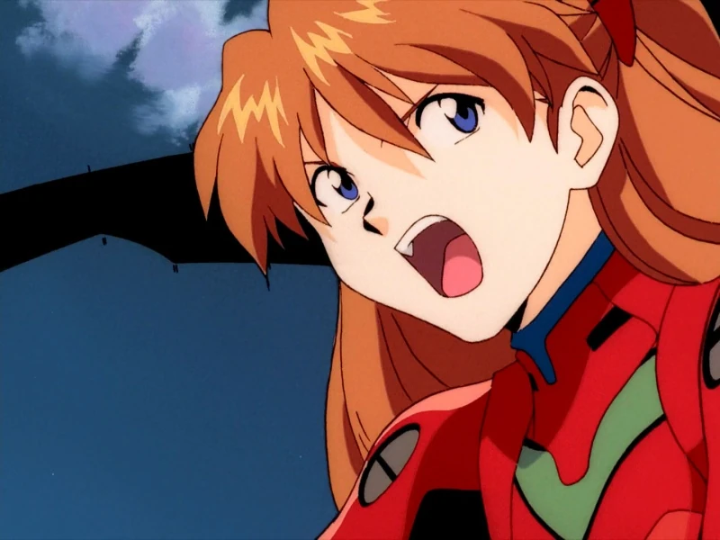
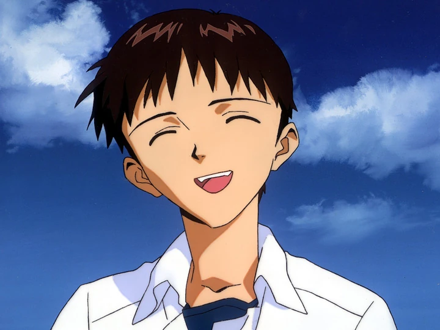

Глава NerV
Гэндо Икари-главнокомандующий Nerv, муж «погибшей» Юи Икари и эмоционально далёкий от сына отец Синдзи Икари. Первоначально известный как Гэндо Рокубунги, он изменил свою фамилию на Икари после женитьбы на Юи, а затем был назначен главой Gehirn, а позже Nerv, организацией Seele.
Вместе с заместителем командующего Кодзо Фуюцуки Гэндо отвечает за оборону Токио-3 против Ангелов и за оказание помощи в завершении проекта совершенствования человечества. Гэндо вызвал сына в Токио-3 для того, чтобы тот пилотировал Еву-01.
В Nerv Гэндо отвечает за исследования Евангелионов и проект совершенствования человечества. Гэндо является отцом третьего дитя, Синдзи Икари. Он единственный, кто поддерживает близкий контакт с Рей Аянами. Гэндо является блестящим ученым и политиком, усердно работающим на свою организацию, однако он чрезвычайно холодно относится к своему сыну и склонен манипулировать людьми в корыстных целях.

Замглавнокомандующего NerV
Заместитель командующего Кодзо Фуюцуки - второй командующий штаб-квартиры Nerv и правая рука Гэндо Икари. Как заместитель командующего Nerv, Фуюцуки часто берёт на себя командование ситуациями на базе, когда Гэндо уезжает по делам. Гэндо также имеет тенденцию выгружать более мирскую работу, такую как собрания городского совета, документы и тому подобное, на Фуюцуки.
На протяжении большей части эпизода 1 Фуюцуки стоит рядом с Гэндо, когда они смотрят, как JSSDF пытается уничтожить Ангела, и делает некоторые комментарии (проливая немного света на некоторые из фоновых элементов истории), пока Гэндо не скажет ему «позаботиться обо остальном», когда сам он спустится на встречу с Синдзи. Он оглядывается на место, где Гэндо был всего минуту назад, и говорит, что это их первая встреча за последние три года. Его последнее появление в эпизоде - когда Гэндо звонит ему через систему связи, и он неохотно принимает приказ Гэндо разбудить Рей и привести её к мосту, когда Синдзи отказывается пилотировать Еву.
Фуюцуки практически не появляется в эпизоде 2 (за исключением короткого разговора о Икари с Рицуко) и в эпизодах с 3 по 8 (опять же, за исключением второго теста активации модуля-00 в эпизоде 5). Он принимает более активное участие в разборе после первой атаки на седьмого Ангела (эпизод 9), где он говорит, что они (Nerv) были унижены, а также с тревогой указывает, что им придётся снова нарисовать карты из-за взрыва мин N2 и оценить ситуацию; он явно расстроен. В конце разбора полётов он встаёт и отчитывает пилотов, говоря им, что их работа - победить Ангелов. Nerv не должны гротескно заявлять о себе, а Синдзи и Аске нужно уметь сотрудничать. Услышав их очевидный ответ, он просто вздыхает и уходит.

Тактический отдел NerV
Отделение тактических операций отвечает за координацию действий Евангелионов в реальном бою, а также за управление обычными силами безопасности и защитной сетью Nerv в сражении с Ангелами.
Силы внутренней безопасности Nerv призваны защищать организацию от террористических атак и других мелких обычных угроз: Nerv был создан для борьбы с Ангелами, а не с другими людьми.
Сотрудники службы безопасности носят форму цвета хаки, как и оперативный персонал, а также красные береты. Из оружия они обычно носят пистолеты-пулёметы Heckler & Koch MP5A4 или Steyr MPi 69/81.Мисато Кацураги (капитан, позже получившая звание майора) носит офицерскую форму, состоящую из красного берета и красного жакета (который она обычно носит открытым, за исключением официальных случаев).
Глава тактического отдела
Мисато Кацураги-капитан, а затем майор в Nerv. Она руководит отделением тактических операций в штаб-квартире Nerv, является ответственной за координацию Евангелионов в реальных боевых действиях (в отличие от научного отдела, который возглавляет старая подруга Мисато доктор Рицуко Акаги). Она дочь доктора Кацураги и единственная выжившая из его экспедиции, уничтоженной во время Второго удара.
Раньше работала в Gehrim,а ее отец-Доктор Кацураги, погиб из-за второго удара в Антарктиде,после чего ей пришлось пройти 2-х летний курс реабилитации.
Именно благодаря ее работе мы уничтожили 3-х ангелов:Рамиила,Гагиила и Сахакиила.

Технический отдел NerV
Технический отдел-научное подразделение Nerv, отвечающее за исследования и разработку Евангелионов, а также за их обслуживание и ремонт. Он также анализирует научные данные, полученные об Ангелах, пытаясь получить более глубокие сведения о них, чтобы помочь тактическому отделу победить Ангелов.
На каждом объекте Nerv работает большой штат механиков, электриков и других сотрудников, занимающихся обслуживанием, ремонтом и строительством. Стандартная униформа техников состоит из оранжевого комбинезона и кепки.
Те, кто занимается исследованиями, разработками и испытаниями Евы, носят стандартную униформу Nerv цвета хаки. Сама доктор Акаги носит лабораторный халат вместо униформы.
Глава технического отдела
Рицуко Акаги-главный учёный Nerv, возглавляет технический отдел штаб-квартиры, который отвечает за исследования и разработку Евангелионов, а также за их техническое обслуживание и ремонт. Она дочь знаменитого учёного Gehirn Наоко Акаги, которая возглавляла проект «Евангелион» до неё.
Рицуко познакомилась с Мисато Кацураги в колледже в Токио-2, а также с парнем Мисато-Рёдзи Кадзи.
После окончания колледжа Рицуко присоединилась к Gehirn и работала непосредственно под руководством своей матери Наоко в недостроенном Токио-3. Во многих аспектах Рицуко живёт в тени своей матери.

Первое дитя
Рей Аянами-результат попытки Гэндо Икари и Кодзо Фуюцуки извлечь Юи Икари из Евы-01, используя её спасённые останки. Эта попытка не удалась. На каком-то уровне Рей Аянами может включать в себя ДНК второго Ангела Лилит, поскольку она является вместилищем души Лилит. Рей Аянами была создана где-то между 2004 и 2010 годами, о чём свидетельствует её появление в 21-м эпизоде. В 2010 году она выглядит как маленький ребёнок, которому, возможно, около четырёх или пяти лет. Позже, в 2015 году, она появляется в возрасте 14 лет (она должна была бы выглядеть ровесницей одноклассников Синдзи, так как они учатся в одном классе).
Поскольку Рей была создана после смерти Юи и ни одно из её тел не может быть 14-летним, подразумевается, что Гэндо и Фуюцуки могут манипулировать её ростом. В терминальной догме содержится большой резервуар, полный запасных клонов Рей. Рицуко Акаги называет их «запасными частями» для системы псевдопилота. Система псевдопилота в Еве-01 также показывает имя РЕЙ, когда она активируется в эпизоде 18. Эти клоны являются источником фразы Рей «если я умру, меня можно заменить» из 19-го эпизода
Место рождения Рей в центральной догме также показано в эпизоде 23. Синдзи Икари отмечает, что оно удивительно похоже на квартиру Рей, а Рицуко даёт понять, что эта комната определённо оставила след в подсознании Рей. На бетонных стенах нарисованы различные состояния спина квантовых частиц и разные названия кварков (нижний, верхний, странный, очарованный, прелестный, истинный — верхний и нижний кварки образуют обычную материю, остальные четыре встречаются гораздо реже и до сих пор генерировались только в ускорителях частиц). Вероятно, именно здесь Рей провела большую часть своих ранних лет.

Второе дитя
Аска на четверть японка и на четверть немка (со стороны матери Кёко Цеппелин Сорью), хотя по национальности она американка, как, видимо, и её отец. Когда Аска была совсем маленькой (до того, как её выбрали пилотом Евангелиона), её мать участвовала в контактном эксперименте с модулем-02 и в результате сошла с ума, решив, что тряпичная кукла-это её дочь, и не обращая внимания на Аску. В это же время отец Аски завёл роман с врачом Кёко. В конце концов Кёко покончила жизнь самоубийством и попросила Аску умереть вместе с ней. Аска согласилась, так как была слишком мала, чтобы понять, чего от неё требует мать, и считала, что только так она сможет убедить Кёко снова стать её матерью. После того как маленькая Аска была выбрана пилотом Евангелиона, она поспешила рассказать об этом матери, но была потрясена, узнав, что её мать покончила жизнь самоубийством, повесив вместо Аски куклу. На похоронах Кёко Аска отказалась плакать, заявив, что теперь ей придётся самой заботиться о себе. После смерти Кёко её отец женился на своей любовнице. Новая мачеха Аски сначала пыталась сблизиться с падчерицей, но в итоге не смогла этого сделать, так как слишком серьёзный для возраста Аски нрав и холодность по отношению к женщине её несколько обеспокоили, и с тех пор они держатся на расстоянии. Смерть матери, измена и повторный брак отца оставили глубокие шрамы на психике Аски
Аска и Ева-02 перевезены из Германии в Японию Тихоокеанским флотом. При встрече (и попытки произвести впечатление) со своим бывшим куратором и первым дитя, она не была впечатлена Синдзи (на самом деле, она выглядит очень раздражённой, когда Кадзи хвалит первый бой Синдзи в обеденном зале), но изменила своё мнение, когда Кадзи сказал ей, что он достиг 40% синхронизации в своём первом бою. Сразу после этого Аска решает взять Синдзи с собой и показать ему Еву-02, рассказывая о её возможностях. Во время демонстрации они слышат взрыв и быстро поднимаются на палубу, чтобы посмотреть, что послужило причиной взрыва. Поняв, что он вызван Ангелом, Аска говорит себе, что это её «шанс», и берёт Синдзи с собой в вылазку на Еве-02, заставляя его надеть один из её комбинезонов, и в итоге им удаётся победить Ангела.
Когда JSSDF атакуют Nerv, Мисато понимает, что Аска станет приоритетной целью для захватчиков, и поручает поместить её в Еву-02 на дне озера в ГеоФронте. Аска в конце концов приходит в сознание и с удивлением обнаруживает себя внутри Евы. Именно тогда JSSDF, обнаружив Еву, пытается атаковать глубинными зарядами, взрывы от которых вводят Аску в панику. Аска начинает неоднократно заявлять, что отказывается умирать. Девушка слышит голос Кёко внутри Евы, который говорит ей не сдаваться. Аска понимает, что всё это время её мать была в Евангелионе, и вступает с душой в контакт. Аска реактивирует Еву и поднимается со дна озера, вовлекая силы JSSDF в битву, а затем побеждает все Евы массового производства в одиночку. Однако, Ева-02 была побеждена, когда серийные Евы реактивировались. Они жестоко расправляются с Евой-02, сперва бросив в неё репликант копья Лонгина и лишив Аску глаза, а затем окружив Еву и разорвав ее на куски. Серийные Евы в конечном итоге приостанавливают свою атаку и поднимаются в небо, оставляя практически уничтоженную Еву-02 на земле. Несмотря на боль и состояние Евы-02, Аске удаётся заставить Еву войти в режим берсерка. Она решительно тянется к Евам в небе, неоднократно угрожая всех их убить. Но в ответ Евы бросают в модуль-02 копья, убивая Аску внутри.

Третье дитя
После того, как его бросил отец, Синдзи был отправлен жить со своим «сенсеем». Он описывает свою жизнь там как «мирную»: он ничего не делал, кроме как существовал, и там «ничего никогда не происходило». Помимо слов Синдзи и редких аллюзий на протяжении всего сериала, ничего не известно о жизни и детстве Синдзи до начала главных событий. Как и у всех персонажей Evangelion, у Синдзи сложная и многоуровневая личность. В начале сериала он кажется несколько пассивным, внешне вежливым, но меланхоличным. Он склонен считать себя менее важным и заслуживающим уважения, чем другие люди. Возможно, в результате такого отвращения к себе или девальвации (в сочетании с вероятным фактом, что в период жизни с «сенсеем» он мало с кем общался), Синдзи чувствует себя на значительном или полном расстоянии от людей, считая, что он не может ни с кем общаться и что никто не может понять его.
Чувства Синдзи к другим людям, как правило, довольно неоднозначны и изменчивы. С одной стороны, он, кажется, боится других людей и эмоционального вреда, который они могут принести ему (в сочетании со страхом быть нелюбимым или брошенным), но с другой стороны, он также жаждет похвалы и принятия (возможно, как попытка «накормить свое слабое эго»). Этот конфликт страха боли и желания похвалы является одной из наиболее заметных характеристик Синдзи. Стоит отметить, что на отдаление от людей повлияли чувства ненависти к себе и собственной бесполезности; он боится, что может причинить другим боль. Несмотря на цинизм, который он иногда проявляет по отношению к отцу, Синдзи также хочет любви Гэндо.
Синдзи также боится боли, быть ненавистным и/или брошенным, что особенно проявляется в его обеспокоенности потенциально вредными или оскорбительными последствиями его действий. Это может быть связано с тем, что его «бросили» в юном возрасте оба его родителя (хотя его мать, по правде говоря, никуда не уходила), и он винит себя в том, что он недостаточно хорош и не может заставить отца остаться.
